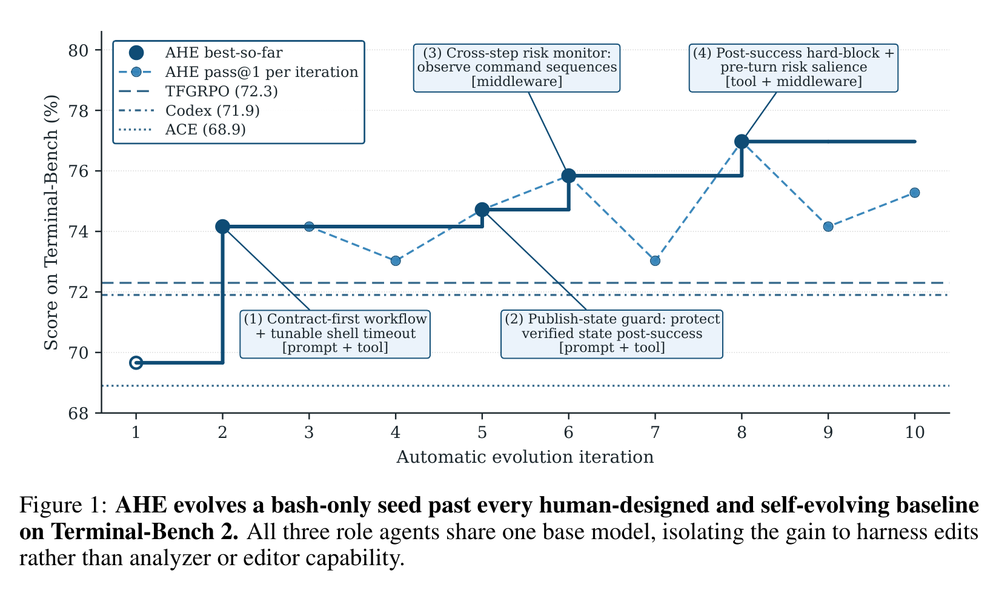
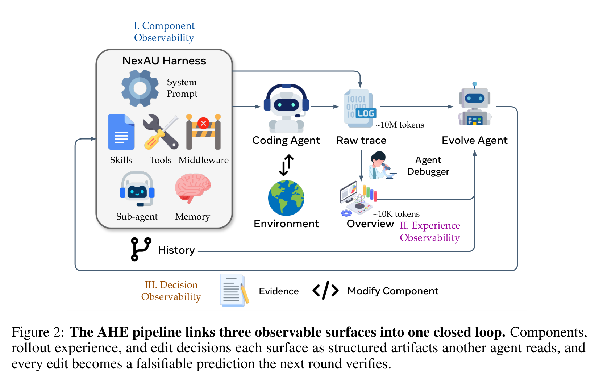
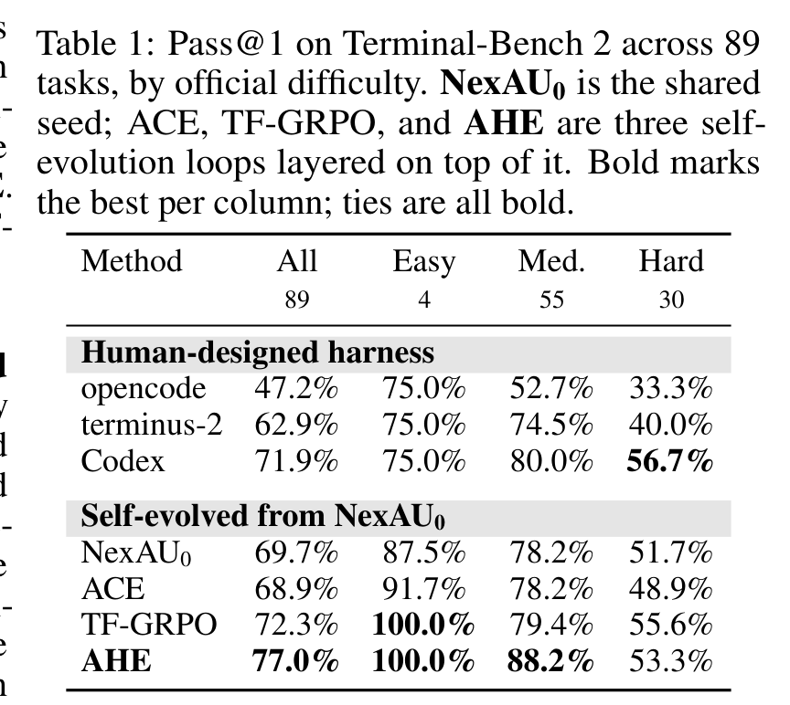
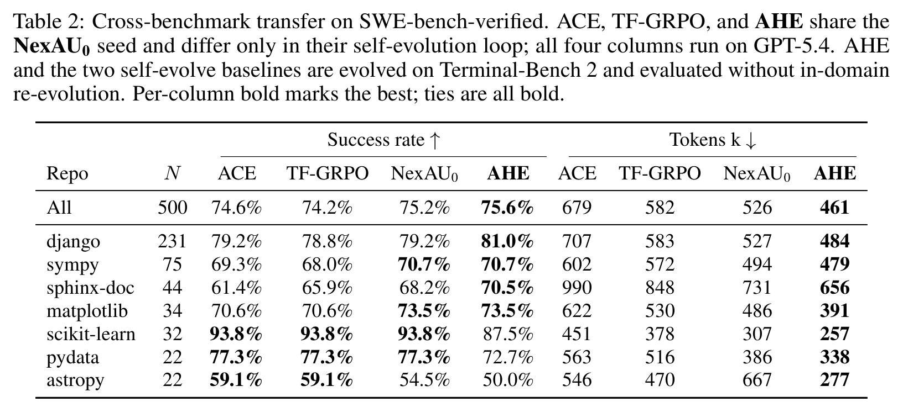
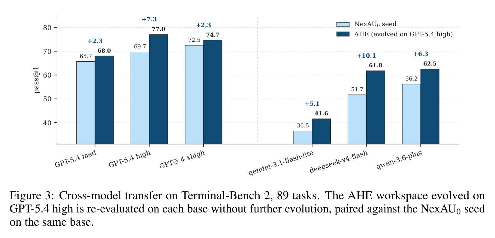
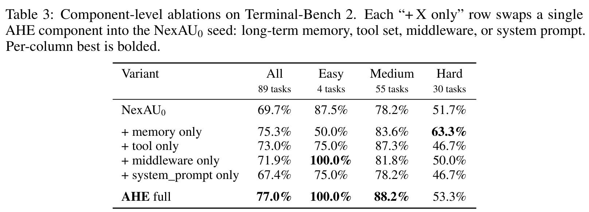
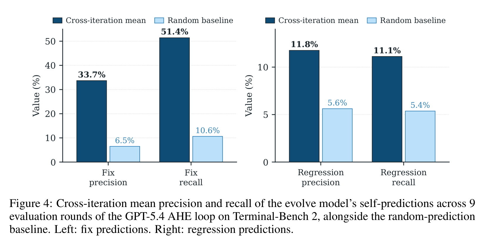

别只训练模型了：让 Coding Agent 的“操作系统”自己进化起来
Loading...
PAPER
CODE
AUTHORS
-
KEYWORDS
-
TL;DR
AHE 这篇论文抓住了 coding agent 里一个常被低估的变量：模型外面的 harness。它把 prompt、工具、中间件、记忆等组件做成可观察、可编辑、可回滚的文件，再让 evolution agent 根据真实轨迹自动改 harness。结果在 Terminal-Bench 2 上从 69.7% 提到 77.0%，还迁移到 SWE-bench 和多种模型。
论文基本信息
- 论文链接：arXiv:2604.25850v3
- 代码链接：agentic-harness-engineering
- 作者团队：复旦大学，北京大学，上海奇绩智风
- 关键词：Coding Agent，Harness Engineering，自动进化，可观测性，Terminal-Bench
真正影响 Agent 的，常常不是模型本身
很多人看 coding agent，第一反应是比较底座模型：谁的推理更强，谁的代码能力更好，谁在 SWE-bench 上分数更高。但这篇论文提醒我们，模型只是系统的一半。另一半是 harness：系统提示词、工具接口、shell 执行方式、中间件、长期记忆、技能、子 agent 配置，以及这些东西如何把模型放进一个可执行环境里。
这件事很现实。一个模型本来能解决问题，但工具给得不好、状态暴露不清楚、失败恢复机制差、验证流程不稳，它也会在长任务里翻车。反过来，好的 harness 能把模型的能力“导出来”，让它更稳定地完成多步工程任务。
AHE（Agentic Harness Engineering）的核心观点就是：harness 不该只靠人工手调，它本身也应该成为一个可以被 agent 自动观察、修改、验证和回滚的学习对象。

从图里看，AHE 从 bash-only 的 NexAU0 seed 出发，十轮后 best-so-far 到 77.0%，超过 Codex-CLI 的 71.9%、TF-GRPO 的 72.3% 和 ACE 的 68.9%。更关键的是，所有 role agents 共享同一个 GPT-5.4 high base model，所以提升不能简单归因于 analyzer 或 editor 更强，而是来自 harness edits。
AHE 的底层信念：不是能力不够，是看不见问题
作者把自动演化 harness 的难点归结为三个“看不见”：
第一，action space 看不清。Harness 里有 prompt、tools、middleware、skills、memory 等组件，如果它们紧耦合在一坨 prompt 或代码里，agent 很难知道该改哪里，也很难只回滚一个失败改动。
第二，经验信号看不清。一次 benchmark rollout 会产生海量轨迹，原始 trace 可能有百万级 token。直接把 raw trace 丢给 evolution agent，它很难从噪声里找出可行动的失败模式。
第三，改动效果看不清。Agent 说“我觉得这个 edit 会修复这些任务”，但下一轮到底修了哪些、破坏了哪些，如果没有结构化记录，就会变成自我解释，而不是可验证实验。
所以 AHE 没有先发明一个更花哨的优化算法，而是先重建可观测性。

这张流程图是全文最重要的方法图。AHE 先把 NexAU harness 的组件拆成文件级对象；再让 coding agent 跑任务，产生 raw trace；Agent Debugger 把约 10M token 轨迹压成约 10K token 的 overview 和 drill-down evidence；最后 Evolve Agent 读证据、修改组件，并把每次修改写成带预测的 manifest。下一轮评测会验证这些预测，失败的 edit 可以按文件粒度回滚。
换句话说，AHE 不是“让 agent 随便自我改造”，而是给它搭了一个实验室：每次改动都必须留下证据、目标、预期收益和潜在回归。
三个 Observability，解决三类混乱
AHE 的 component observability 来自 NexAU。NexAU 把 system prompt、tool description、tool implementation、middleware、skill、sub-agent configuration 和 long-term memory 暴露为固定路径下的文件。这个设计的好处是，失败模式可以映射到具体组件：工具不够好就改 tool，状态检查不稳就加 middleware，经验可复用就写 memory，而不是把所有东西塞进 prompt。
Experience observability 由 Agent Debugger 完成。它不会要求 evolver 读完整轨迹，而是把每个任务的 trace 组织成可导航文件环境，再产出 per-task analysis 和 benchmark-level overview。这样 evolver 先看总结，需要时再 drill down 到原始 trace。这个 progressive disclosure 很关键，因为 coding agent 失败通常不是一句话能解释，而是“某个命令、某个状态、某个验证步骤”在几十轮操作后埋下的问题。
Decision observability 则是论文里最有意思的治理设计。每个 edit 都要写 manifest：证据是什么，根因是什么，想改什么，预期修复哪些任务，哪些任务有回归风险。下一轮会用真实 task-level delta 检查这些预测。这个设计把 harness evolution 从“我感觉更好了”变成“我预测这些任务会变化，下一轮来验”。
这也是这篇论文最像工程论文的地方：它关心的不只是最终分数，还关心分数为什么变、改动怎么追责、错了怎么退。
主结果：AHE 不是多写 prompt，而是改了 prompt 之外的东西
Terminal-Bench 2 是这篇论文的主战场，共 89 个任务，分成 4 个 easy、55 个 medium、30 个 hard。AHE 从最小 seed NexAU0 出发，seed 只有一个 shell-execution tool，没有 middleware、skills、sub-agents。这样做是为了避免 seed 本来就带太多人类经验，污染改动归因。

主表里最直接的数字是：NexAU0 为 69.7%，ACE 为 68.9%，TF-GRPO 为 72.3%，AHE 达到 77.0%。AHE 在 easy 和 medium 上都达到最好，尤其 medium 从 seed 的 78.2% 提到 88.2%。Hard 上 AHE 是 53.3%，略低于 Codex 的 56.7% 和 TF-GRPO 的 55.6%，这不是论文回避的问题，后面消融会解释：多个组件叠在一起时会产生非加性干扰，尤其在长任务预算里反复验证会吃掉步骤。
这里有一个很重要的对比：ACE 和 TF-GRPO 也都是 self-evolution baselines，但它们主要在 prompt/playbook 或 trajectory feedback 层面工作；AHE 能改 tools、middleware、memory 和 prompt。这说明 coding agent 的很多提升不在“再写一段更聪明的提示词”，而在模型外部的工程结构里。
迁移实验：如果只是在刷 Terminal-Bench，意义就小了
这类自动进化论文最怕的质疑是：你是不是只把 harness 调成了 Terminal-Bench 专用外挂？作者做了两个迁移测试：一个跨 benchmark，一个跨 base model。
跨 benchmark 用的是 SWE-bench-verified，500 个任务，AHE、ACE、TF-GRPO 都是在 Terminal-Bench 2 上 evolve 后直接迁移过去，不做 in-domain re-evolution。

结果不算巨大，但方向很有意思：AHE 总体成功率 75.6%，略高于 NexAU0 的 75.2%、ACE 的 74.6% 和 TF-GRPO 的 74.2%；同时 tokens/trial 从 seed 的 526k 降到 461k，比 ACE 少 32%，比 TF-GRPO 少 21%。这说明 AHE 的价值不只是多塞策略文本，而是把行为压进工具、中间件和记忆里，减少每次调用时重新推理流程的 token 成本。
跨模型迁移更能说明 harness 结构有没有普适性。作者把在 GPT-5.4 high 上 evolve 出来的 AHE workspace 冻住，然后换 GPT-5.4 medium/xhigh、Gemini-3.1-Flash-Lite、DeepSeek-V4-Flash、Qwen-3.6-Plus 重新评估。

五组都是正增益：GPT-5.4 medium +2.3 pp，GPT-5.4 high +7.3 pp，GPT-5.4 xhigh +2.3 pp，Gemini-3.1-Flash-Lite +5.1 pp，DeepSeek-V4-Flash +10.1 pp，Qwen-3.6-Plus +6.3 pp。作者的解释我觉得合理：越接近饱和的强模型，越能自己从 prompt 里推导出部分操作策略；较弱或不同家族模型更依赖 harness 里固定下来的协调模式。
不过这里也有一个警惕点：同一 GPT-5.4 家族里，medium/high/xhigh 的收益不是单调的。论文认为这和 step budget、per-task timeout 是按 GPT-5.4 high 拟合有关，xhigh 可能因为更容易超时而吃亏。这说明 harness 迁移不只是“换模型还能用”，还要重新匹配时间预算、步数预算和推理强度。
消融实验讲了一个反直觉故事：System Prompt 单独换上反而变差
Table 3 是我最喜欢的一张表，因为它拆出了 AHE 的增益到底来自哪里。作者把 AHE full 中的单个组件分别换进 NexAU0 seed：memory only、tool only、middleware only、system_prompt only。

结果很清楚：memory only 从 69.7% 到 75.3%，tool only 到 73.0%，middleware only 到 71.9%，但 system_prompt only 降到 67.4%。Full AHE 是 77.0%。
这说明两个问题。
第一，真正可迁移的经验更多在“可执行结构”里，而不是自然语言策略里。Memory 记录 boundary-case lessons，tools 自动暴露 contract hints，middleware 强制 finish-hook 做 evaluator-isomorphic closure check，这些都是模型可以直接利用的环境结构。
第二，组件之间不是简单相加。三个正向组件单独增益加起来是 +11.1 pp，但 full AHE 只有 +7.3 pp；Hard 上 memory only 甚至达到 63.3%，高于 full AHE 的 53.3%。原因是多个组件可能都在推动类似的 closure-style verification，叠起来会反复检查、浪费步骤，在长任务里尤其伤。
这给自动进化系统一个很实际的提醒：发现好组件还不够，下一步要学会建模组件之间的相互作用，否则“每个局部都好”未必等于“整体最好”。
自归因能力：会预测自己能修什么，但不太会预测会弄坏什么
AHE 要求每次 edit 都写下 predicted fixes 和 at-risk regressions。Figure 4 检查了九轮 evolution 中这些预测的 precision/recall。

fix 预测还不错：precision 33.7%，recall 51.4%，大约是随机 baseline 的 5 倍。这说明 Evolve Agent 不是乱改，它确实能从证据里识别一批可能被修复的任务。
但 regression 预测就弱很多：precision 11.8%，recall 11.1%，只比随机 baseline 高约 2 倍。换句话说，agent 比较会解释“这个改动为什么会帮忙”，却不太会预判“这个改动会把哪些任务搞坏”。
这恰好解释了为什么 evolution 曲线不是一路单调上升，也解释了为什么 full AHE 在 Hard 上不如 memory-only。当前 AHE 已经能做“证据驱动的正向修复”，但对负外部性的建模还远远不够。
我会如何读这篇论文
我会把 AHE 看成一篇非常及时的 coding agent 系统论文。它没有把所有希望压在更强底座模型上，而是把 agent 周围的 harness 当作一个可以持续积累经验的外部学习层。这很符合真实工程：模型能力每几个月变化一次，benchmark、工具、环境、任务形态也在变，靠人工不断重写 prompt 和工具说明，很难跟上。
这篇论文最有说服力的地方，是它没有停留在“让 LLM 优化 prompt”这种浅层自进化，而是把组件、轨迹和决策都做成可观察对象。尤其 decision manifest 这一步，把自我修改变成可验证合约，避免 agent 只会写漂亮理由。
但它也还是研究原型，不是成熟的自治系统。Terminal-Bench 2 和 SWE-bench-verified 覆盖面有限，step budget 和 timeout 会影响迁移；自回归预测仍然弱；组件交互会造成非加性损失；安全治理也还没有完整展开。所以我不会把 AHE 读成“agent 能完全自己优化自己了”，而会读成“我们终于有了一个比较像工程实验室的 harness evolution 框架”。
值得关注的地方
- 从 prompt optimization 转向 harness optimization。 未来 coding agent 的差距，很可能不只来自底座模型，而来自谁能更快把失败经验沉淀到工具、middleware、memory 和执行协议里。
- 回归预测会成为自进化系统的硬门槛。 AHE 已经能较好预测 fix，但 regression blindness 仍明显。真正可长期运行的 evolution loop，必须能在改动前评估负面影响，而不是改坏了再回滚。
- 组件交互需要被显式建模。 Memory、tools、middleware 单独都有效，但叠加后会互相干扰。后续可以研究 interaction-aware edit selection，让 evolution agent 不只是选“好组件”，而是选“组合后不打架”的组件。
- Harness 迁移要和运行预算一起看。 同一个 harness 换模型、换 reasoning tier、换 timeout 后效果会变。未来的 agent 平台可能需要把 harness、模型、预算和任务类型作为一个联合配置来优化。